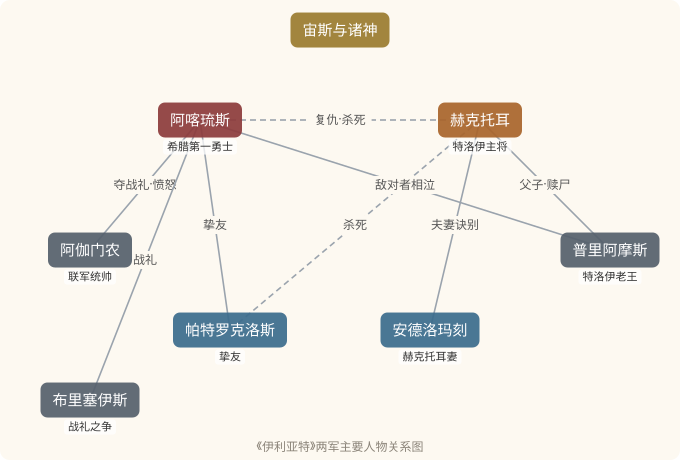

伊利亚特
| 作者 | 荷马 |
|---|---|
| 成书/出版 | 学界主流定于前8世纪中后期（也有7世纪说）；叙事背景为特洛伊战争末年（约前12世纪的传说时代） Iliad — Encyclopaedia Britannica（百科全书） |
| 国别/地区 | 古希腊 |
| 时代 | 古代 · 上古 |
| 体裁 | 英雄史诗（长篇叙事诗，24卷） |
| 语言 | 希腊语（荷马式希腊语：伊奥尼亚方言为主的文学混合语） |

二、创作背景
题材来源：特洛伊战争——迈锡尼希腊诸邦围攻小亚细亚的特洛伊城十年（传说时间约前1194—1184，Eratosthenes 的传统纪年，Britannica Homer 条目引述）。荷马与其题材相隔约四百年（希腊'黑暗时代'，Britannica Iliad 条目）。
成书：全诗15693行（Britannica Iliad 条目），分24卷，六音步长短短格。学界主流把它定于前8世纪中后期写定（Britannica Iliad 条目：late 8th century BC），也有7世纪说；前630年为最晚时限。Milman Parry 的研究确立了其口头传统性质（Britannica Homer 条目）。
文本史：泛雅典娜节官定诵读、亚历山大里亚校订、10世纪威尼斯抄本 Venetus A、1488年佛罗伦萨首印（Britannica Iliad 条目）。英译传统自查普曼（1598）经蒲柏至现代（拉蒂摩尔、费格勒斯、艾米莉·威尔逊2023——Britannica Iliad 条目）。
三、内容脉络
史诗开篇点题：'歌唱阿喀琉斯的愤怒'（mēnis——愤怒，全诗第一个词，Britannica Iliad 条目）。故事取特洛伊战争第十年最后约五十天（'in medias res'从中间开始）。
第一弧线（1—19卷）：阿伽门农夺走阿喀琉斯的战礼布里塞伊斯，阿喀琉斯怒而罢战，并求其母忒提斯让宙斯降灾希腊联军——希腊人节节败退（赫克托耳火烧战船）；帕特罗克洛斯披挂阿喀琉斯铠甲出战，杀死萨尔佩冬后被赫克托耳所杀。
第二弧线（20—24卷）：阿喀琉斯为友复仇重返战场，杀死赫克托耳并拖尸绕城；普里阿摩斯深夜潜入敌营赎回儿子遗体——两大仇敌相对而泣，史诗以赫克托耳的葬礼结束。特洛伊城的陷落与木马计不在本诗之内（Britannica Iliad 条目：'the Iliad does not depict the fall of Troy'）。
四、主要人物表
| 人物 | 身份 | 说明 |
|---|---|---|
| 阿喀琉斯 | 希腊联军第一勇士 | 愤怒（mēnis）的主人公：在荣耀（kleos）与归乡（nostos）间选择，两重命运（短命而荣耀/长寿而无名） |
| 赫克托耳 | 特洛伊王子、主将 | 保护家国的责任英雄——与妻儿诀别（第6卷）是史诗最动人的段落之一 |
| 阿伽门农 | 迈锡尼王、联军统帅 | 夺人战礼引发灾祸，骄傲（hubris）的化身 |
| 帕特罗克洛斯 | 阿喀琉斯挚友 | 代友出战而死，触发史诗第二弧线 |
| 普里阿摩斯 | 特洛伊老王 | 第24卷夜赎爱子遗体——敌对双方在悲痛中认出彼此的人性 |
| 宙斯与诸神 | 奥林波斯神族 | 分成两派直接参战（雅典娜、赫拉助希腊；阿波罗、阿佛洛狄忒助特洛伊） |
五、主题与艺术特点
- 愤怒与和解：从阿喀琉斯的怒火到与普里阿摩斯的眼泪——史诗的真正主题是把不可和解的敌意还原为人共同承受的死亡与爱。
- 荣耀与死亡（kleos 与 nostos）：阿喀琉斯的双重命运选择确立西方文学'光荣与死亡'的母题。
- 命运（kēr）：连宙斯也不能改写——'宙斯也无法改变命运'（Britannica Iliad 条目对 fate 的讨论）。
- 战争的全景书写：既是杀戮（西摩伊西俄斯之死等特写）也是和平的瞬间（赫克托耳诀别、普里阿摩斯宴叙）——西蒙娜·薇依称其展现'力的运行将人变成物'（《伊利亚特，或力之诗》1939，Britannica Iliad 条目提及）。
六、影响与评论
- Britannica Iliad 条目：常被视为欧洲文学第一部实质作品，是古典语文学研究的核心；希腊世界教育的基石。
Iliad — Encyclopaedia Britannica（百科全书） - Britannica Homer 条目：史诗为希腊文明之基石、影响维吉尔与文艺复兴——'the most important poems of the classical European tradition'（古典欧洲传统中最重要的诗）。
Homer — Encyclopaedia Britannica (by Geoffrey S. Kirk)（百科全书） - Britannica Iliad 条目：西蒙娜·薇依《伊利亚特，或力之诗》（1939）——20世纪最重要的战争哲学论文之一以它为文本。
Iliad — Encyclopaedia Britannica（百科全书） - 翻译与改编史：从莎士比亚《特洛伊罗斯与克瑞西达》到电影《特洛伊》（2004）与帕特里克·巴克《女孩们的沉默》等女性重述（Britannica Iliad 条目详列改编传统）。
Iliad — Encyclopaedia Britannica（百科全书）
七、阅读建议
- 神名与人名系统庞大，宜备一张希腊/特洛伊两军人物表与地图。
- 程式化重复（重复的短语与场景）是口头传统的标记，不是冗笔——以朗读体会其节奏。
- 尊严（timē）、荣耀（kleos）等核心概念需要先了解，否则动机难以理解。
- 中译：罗念生、王焕生译《伊利亚特》（人民文学出版社）——通行标准译本。
- 英译：Richmond Lattimore（1951，逐行直译）/ Robert Fagles（1990，气势磅礴）/ Emily Wilson（2023，五音步，Britannica Iliad 条目列举）。
- 辅助：陈中梅译注本（含希腊语注释）与《剑桥荷马指南》类导读。
先读第1卷（愤怒起因）与第6卷（赫克托耳诀别）→ 第22卷（赫克托耳之死）与第24卷（普里阿摩斯赎尸）两大高潮 → 再通读其余诸卷；战斗特写可跳读。对照《奥德赛》看荷马世界的两副面孔。
八、待核实
- 写定年代（前8世纪说与7世纪说并存）与作者问题均无定论（Britannica 口径已并列）。
- 行数15693（标准校本）与卷数24为 Britannica 口径；不同校本行数微异。
- 特洛伊战争的历史真实性（赫梯文献与考古学证据）学界持续争论。
- 中译本译名细节（罗念生译名的权威性）与陈中梅译注本出版信息待核。